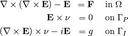
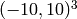
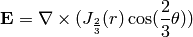
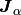
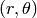
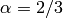
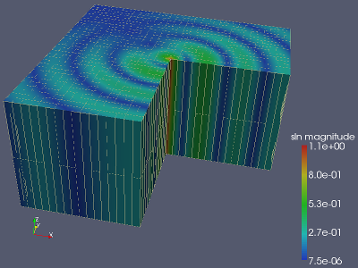

Git reference: Benchmark bessel.
This example solves time-harmonic Maxwell’s equations in an L-shaped cubic units and it describes the diffraction of an electromagnetic wave from a re-entrant corner. The L-shaped region formed from from three unit cubes is chosen for several reasons. It is one of the simplest geometries for which solution to the wave equation can not be expressed analytically, so finite element method is necessary. The 270 degree nonconvec corner cause a singularity in the exact solution. This example shows how to solve complex valued problem as well.
PDE solved: Time-harmonic Maxwell’s equations
(1)
Domain of interest is the square  missing the cube lying in the fourth quadrant. Boundary conditions: Combined essential and natural.
Exact solution is:
(2)
The code reads as following:
// Bessel function of the first kind, order n, defined in bessel.cpp
static void exact_sol_val(double x, double y, double z, scalar &e0, scalar &e1)
{
double t1 = x*x;
double t2 = y*y;
double t4 = sqrt(t1+t2);
double t5 = jv(-1.0/3.0,t4);
double t6 = 1/t4;
double t7 = jv(2.0/3.0,t4);
double t11 = (t5-2.0/3.0*t6*t7)*t6;
double t12 = atan2(y,x);
if (t12 < 0) t12 += 2.0*M_PI;
double t13 = 2.0/3.0*t12;
double t14 = cos(t13);
double t17 = sin(t13);
double t18 = t7*t17;
double t20 = 1/t1;
double t23 = 1/(1.0+t2*t20);
e0 = t11*y*t14-2.0/3.0*t18/x*t23;
e1 = -t11*x*t14-2.0/3.0*t18*y*t20*t23;
}
Static void exact_sol(double x, double y, double z, scalar &e0, scalar &e1, scalar &e1dx, scalar &e0dy)
{
exact_sol_val(x, y, z, e0, e1);
double t1 = x*x;
double t2 = y*y;
double t3 = t1+t2;
double t4 = sqrt(t3);
double t5 = jv(2.0/3.0,t4);
double t6 = 1/t4;
double t7 = jv(-1.0/3.0,t4);
double t11 = (-t5-t6*t7/3.0)*t6;
double t14 = 1/t4/t3;
double t15 = t14*t5;
double t21 = t7-2.0/3.0*t6*t5;
double t22 = 1/t3*t21;
double t27 = atan2(y,x);
if (t27 < 0) t27 += 2.0*M_PI;
double t28 = 2.0/3.0*t27;
double t29 = cos(t28);
double t32 = t21*t14;
double t35 = t21*t6;
double t36 = t35*t29;
double t39 = sin(t28);
double t41 = 1/t1;
double t43 = 1.0+t2*t41;
double t44 = 1/t43;
double t47 = 4.0/3.0*t35/x*t39*y*t44;
double t48 = t5*t29;
double t49 = t1*t1;
double t52 = t43*t43;
double t53 = 1/t52;
double t57 = t5*t39;
double t59 = 1/t1/x;
e1dx =-(t11*x+2.0/3.0*t15*x-2.0/3.0*t22*x)
*t6*x*t29+t32*t1*t29-t36-t47+4.0/9.0*t48*t2/t49*t53+4.0/3.0*t57*y*t59*t44-4.0/3.0*t57*t2*y/t49/x*t53;
e0dy = (t11*y+2.0/3.0*t15*y-2.0/3.0*t22*y)*t6*y*t29-t32*t2*t29+t36-t47-4.0/9.0*t48*t41*t53+4.0/3.0*t57*t59*t53*y;
}
where jv() is the Bessel function  of the first kind,  the polar coordinates and .
Code for the weak forms:
// Weak forms.
template<typename real, typename scalar>
scalar biform(int n, double *wt, fn_t<scalar> *u_ext[], fn_t<real> *u, fn_t<real> *v, geom_t<real> *e, user_data_t<scalar> *ext)
{
return 1.0/mu_r * hcurl_int_curl_u_curl_v<real, scalar>(n, wt, u, v, e)
- sqr(kappa) * hcurl_int_u_v<real, scalar>(n, wt, u, v, e);
}
ord_t biform_surf_ord(int n, double *wt, fn_t<ord_t> *u_ext[], fn_t<ord_t> *u, fn_t<ord_t> *v, geom_t<ord_t> *e, user_data_t<ord_t> *ext)
{
return ord_t(v->fn[0].get_max_order());
}
scalar biform_surf(int n, double *wt, fn_t<scalar> *u_ext[], fn_t<double> *u, fn_t<double> *v, geom_t<double> *e, user_data_t<scalar> *ext)
{
// j * kappa * E_T * F_T
// E_T = nu x E x nu (nu is outer normal)
std::complex<double> ii = std::complex<double>(0.0, 1.0);
scalar result = 0;
for (int i = 0; i < n; i++) {
scalar uu[3] = { u->fn0[i], u->fn1[i], u->fn2[i] };
scalar tpu[3];
calc_tan_proj(e->nx[i], e->ny[i], e->nz[i], uu, tpu);
scalar vv[3] = { v->fn0[i], v->fn1[i], v->fn2[i] };
scalar tpv[3];
calc_tan_proj(e->nx[i], e->ny[i], e->nz[i], vv, tpv);
result += wt[i] * (uu[0] * vv[0] + uu[1] * vv[1] + uu[2] * vv[2]);
}
return ii * (-kappa) * result;
}
scalar liform_surf(int n, double *wt, fn_t<scalar> *u_ext[], fn_t<double> *v, geom_t<double> *e, user_data_t<scalar> *ext)
{
std::complex<double> ii = std::complex<double>(0.0, 1.0);
scalar result = 0;
for (int i = 0; i < n; i++) {
scalar dx[3], dy[3], dz[3];
scalar3 ev = exact(e->x[i], e->y[i], e->z[i], dx, dy, dz);
scalar curl_e[3];
calc_curl(dx, dy, dz, curl_e);
scalar tpe[3];
calc_tan_proj(e->nx[i], e->ny[i], e->nz[i], ev, tpe);
scalar g[3] = {
(e->nz[i] * curl_e[1] - e->ny[i] * curl_e[2]) - ii * kappa * tpe[0],
(e->nx[i] * curl_e[2] - e->nz[i] * curl_e[0]) - ii * kappa * tpe[1],
(e->ny[i] * curl_e[0] - e->nx[i] * curl_e[1]) - ii * kappa * tpe[2],
};
// tpv is tangencial projection of v (test function)
scalar vv[3] = { v->fn0[i], v->fn1[i], v->fn2[i] };
scalar tpv[3];
calc_tan_proj(e->nx[i], e->ny[i], e->nz[i], vv, tpv);
result += wt[i] * (g[0] * tpv[0] + g[1] * tpv[1] + g[2] * tpv[2]);
}
return result;
}
// Maximal polynomial order to integrate surface linear form.
ord_t liform_surf_ord(int n, double *wt, fn_t<ord_t> *u_ext[], fn_t<ord_t> *v, geom_t<ord_t> *e, user_data_t<ord_t> *ext)
{
return ord_t(v->fn[0].get_max_order());
}
Solution:
See also